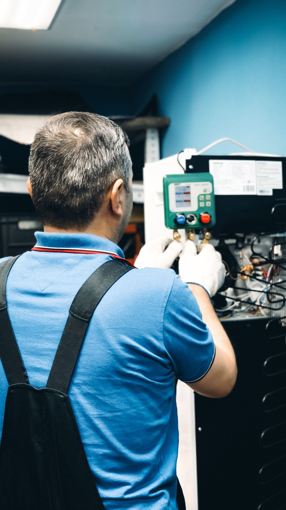

Установка кондиционеров
Монтаж сплит-систем и климатического оборудования.
цена уточняетсяУкажите задачу и площадь помещения — сайт подскажет ориентир мощности и предложит удобный день выезда в рабочие часы.

Фото — иллюстрация (Pexels), не сотрудник «СВК-Сервис»
Сайт 2015 года не адаптирован под телефон, цен на монтаж нет, а номер на сайте не совпадает с номерами в Яндекс Картах — летом клиент звонит тому, кого быстрее понял.
Задача, тип объекта, площадь и удобный день выезда — в одной заявке с телефона; ориентир мощности виден сразу.
Подсказывает мощность по площади, предлагает только часы пн–пт 9–18 по новосибирскому времени и отправляет заявку мастеру в Telegram.
✦Это концепт. С вашими фото и правками будет ещё лучше
Список — с текущего сайта: работаем с оборудованием любых марок и моделей.
Монтаж сплит-систем и климатического оборудования.
цена уточняетсяУстановка тепловых завес и тепловых установок.
цена уточняетсяПоиск неисправностей климатического оборудования.
цена уточняетсяРемонт оборудования любых марок. По сайту — гарантийный сервисный центр ООО «ЮниЭл Дистрибьюшн» по бытовому климату в Новосибирске и области (актуальность уточняется).
цена уточняетсяПлановое обслуживание систем кондиционирования и вентиляции, сервисная поддержка компаний.
цена уточняетсяМонтаж и обслуживание систем вентиляции.
цена уточняетсяЦены на монтаж и обслуживание на текущем сайте не опубликованы — уточняются. На сайте есть прайс-листы на кондиционеры Daikin, Midea, Kentatsu и Ballu (файлы Excel).
Запишитесь на чистку и проверку до жары, пока у мастеров есть свободные дни. Условия сезонных акций уточняются.
По данным текущего сайта: с 2010 года, сертифицированные сотрудники, работа по всему Сибирскому региону. Отзывов на Яндекс Картах пока нет.
Офисы, сети быстрого питания — обслуживание и сервисная поддержка.
Установка и контроль оборудования, в том числе в школах.
Установка и ремонт бытовых кондиционеров.
Выезд — в рабочие часы пн–пт 9:00–18:00 (новосибирское время). Стоимость работ уточняется после осмотра.
Офис №102Б. Почта: svc-service@mail.ru. Какой номер основной — уточняется: на сайте и в Яндекс Картах указаны разные.